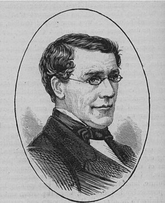

Историческая справка:
Этот шифр был создан английским физиком Чарльзом Уитстоном в 1854 году, но носит имя лорда Лайона Плейфера, способствовавшего применению этого способа шифрования к документам государственного уровня.
Не требующий какого-либо дополнительного специального оборудования и будучи достаточно простым в использовании, шифр Плейфера активно применялся военными, в том числе во время Первой мировой войны.
Суть шифра заключается замене биграмм(а не каждой буквы по отдельности), что делает его более стойким к частотному анализу по сравнению с шифрами простой замены, где заменяются буквы.
Для английского алфавита для этого шифра используется матрица 5x5 (так как в английском алфавите 26 букв, буква Q не используется). Выбирается ключ, который может быть записан либо слева направо сверху вниз, либо по спирали из левого верхнего угла в центр.
Сообщение, которое необходимо зашифровать, разбивается на пары букв, замены для которых находят в заполненной матрице.

Чарльз Уитстон